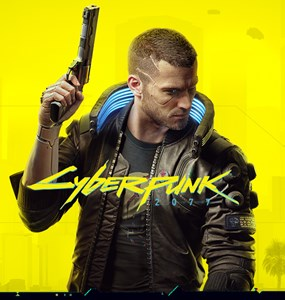
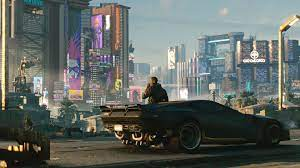
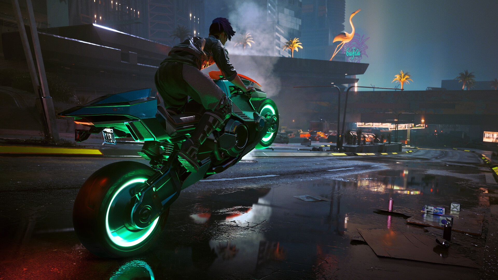

Cyberpunk 2077, CD Projekt Red tarafından geliştirilen ve 2020 yılında CD Projekt tarafından yayınlanan rol yapma türündeki video oyunudur. Cyberpunk serisinden uyarlanan oyun, altı farklı bölgeye sahip distopik açık dünya olan Night City'de geçmektedir. Oyuncular, birinci şahıs bakış açısıyla oynanan oyunda bilgisayar korsanlığı, mekanik beceri, menzilli silah kullanımı ve yakın dövüş gibi seçeneklere sahip V karakterini canlandırmaktadır. Üçüncü şahıs bakış açısıyla oynanış sadece araç sürüşlerinde yapılabilmektedir.

Cyberpunk 2077, stüdyonun önceki oyunu The Witcher 3: Wild Hunt'ın çalışan sayısından daha fazla, yaklaşık 500 kişiyle ve REDengine 4 kullanılarak geliştirilmiştir. Oyun için Polonya'nın Wrocław kentinde yeni bir bölüm açıldı ve geliştirme aşamasına yardımcı olması için Digital Scapes, Nvidia ve QLOC ile ortaklık kuruldu. Cyberpunk'ın yaratıcısı Mike Pondsmith oyunun geliştirilmesinde danışman olarak görev aldı. Ayrıca aktör Keanu Reeves oyunda baş roldür. Orijinal müzik, birkaç lisanslı sanatçının katkılarıyla Marcin Przybyłowicz tarafından yönetildi.
CD Projekt, 10 Aralık 2020'de PlayStation 4, Stadia, Windows ve Xbox One için Cyberpunk 2077'yi piyasaya sürdü. PlayStation 5 ve Xbox Series X/S sürümlerinin 2021'de çıkması planlandı. Bazı oynanış unsurları karışık tepkiler alsa da, hikâye anlatımı, atmosferi ve grafikleri için övgü aldı. Xbox ve PlayStation 4'deki yazılım hataları ve performans sorunları nedeniyle eleştirildi. Sony oyunu, 17 Aralık 2020'de "bir sonraki duyuruya" kadar PlayStation Store'dan kaldırırken, Microsoft Mağazası, oyunun açıklamasına Xbox One kullanıcıları için bir uyarı ekledi.

Night City, Bağımsız Kuzey Kaliforniya Devleti'nde, şirketler tarafından kontrol edilen, federal ve eyalet kanunlarının pek uygulanmadığı bir Amerikan megakentidir. Şehir, atık toplama, bakım ve toplu taşıma gibi günlük konular için robotik teknolojisi kullanır. Şehrin görsel yapısı, yaşadığı dört dönemden türemiştir; katı Entropizm, renkli Kitsch, Neo-Militarizm ve zengin Neo-Kitsch.Night City'de evsiz kişi sayısı çoktur; ancak yoksullar için sibernetik modifikasyonun önüne geçilemez, bu kozmetik bağımlılığa sebebiyet verir ve bunun sonucunda şiddete yol açar. Bu tehditler, Psycho Squad olarak bilinen silahlı kuvvetler tarafından bastırılır. Şehirde hızlı tıbbi hizmetler için Travma Ekibi çağırılabilir. Şehirdeki herkes şehrin yapısı yüzünden tehdit içinde olduğu için, tüm vatandaşların halka açık yerlerde ateşli silah taşımasına izin verilir.
